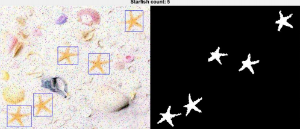

.
My Work
Hello and welcome to my website. Here you will find my previous professional projects and university assignments.
Unity Projects
VR Hidden Plastics:
During my time at Lampada, I was tasked with working on a VR interactive educational scavenger hunt game which required users to find plastics littered in a home environment. The main objectives of this project was to find plastics and place them into a recycling to gain points to proceed into a different area.
From developing this software, I used Unity with the Unity XR SDK and XR Interactable toolkit along side C# scripts. As well as the software aspect of the development, I was working with baking lights, render pipelines and general optimisation. This project was developed wirelessly for the Quest 2.
VR Digital Redesign:
During my time at Aura, I was tasked with making a digital redesign of the digital suite in the Aura Innovation Center. The focus of redesigning this room in virtual reality was to give potential Small and Medium Enterprises (SMEs) a visual representation on how they can utilise the space and how they could use it.


This project was created using the Unity Game Engine and the Unity XR SDK. Elements such as a VR Rig, teleportation mechanics, continuous movement functions, grabbing interactables and object placement we included in this project. Also some non-VR elements such as a scene manager and rotatable objects were included.
NHS Anatomy:
As well as the VR Digital Redesign, I was also tasked in creating an anatomy training tool which would educate users about the human anatomy by interacting with individual body parts, such as the heart and lungs.

During the creation of this program, I collaborated with both a CAD technician and a 3D modeler to create the body models. This project was also featured as part of the InventX tour which explored 3D and 4D aspects of the Aura Innovation Centre and featured a section about the benefits of VR and AR.
Virtual Environment-based 3D Painting:
This project is about developing a Virtual Environment-based 3D Painting, which allows a user to create virtual 3D artwork. The software has the ability for a user to draw in virtual reality and use different features such as 3D and 2D paint. This project was developed within the Unity game engine and using the Steam VR SDK, which allowed the compatibility of using the HTC VIVE headset and remotes.
The way that this project differs from others which are similar is that it focuses on the virtual reality aspect which enhances the creative aspect of the project as the user will be able to move and create work but in a virtual environment. The remotes were used to paint by using the trigger and holding it to draw shapes with a single line.
The Gem Heist - Commercial Games Development Process:
This project was developed for my Commercial Games Development Process modual at university which required me to work as part of a team to create a game from following a design document which one of us created. The main concept of this title was to create a puzzle-based title that would challenge the player to complete a series of puzzles. These puzzles will consist of simple key selection to open doors and platform puzzles to gain access to the next section of the game. The end goal is to reach something which resembles a prize which in turn will congratulate you and finish the game.
There are multiple features which were implemented in the game. These mechanics were used to make each room different when trying to complete a puzzle. The first room was a key selection-based room in which the player must select a number of keys to gain access to the next room. The mechanics which were used in this part of the game were the movement and look mechanics which allowed the player to move about and interact with each of the key objects in the room. Another mechanic was the key interaction feature which would count on how many keys the player selected and would use that to determine what state of the door is whether it was locked or unlocked.
Three Thing Game - Endless Runner:
Back in April of 2019, myself and four other developers and designers competed in a Game Jam which tasked us in creating a game from three words and under the time of 48 hours. Our three words were plant, sewer and race. The final product was a mobile endless runner game which challenged the player to go down a track avoiding plants while collecting power up items. Some of the mechanics were randomly generated tracks and item placements.
Other Game Related Projects
Game Engine and Game Development:
The purpose of this project was to develop a Game Engine which produces and runs a Maze Escape styled game which would allow the user to collect keys which would activate a portal. The player would have to avoid multiple different types of drones and moving objects in order to collect these keys. The engine should support stereo sound effects on certain entities and a moving drone which follows the player.
The engine's components were controlled through an interface class which for each of the other components in the engine which is used as a forefront for each component in the engine. It contains an enum (enumerated) which is a data type which holds all the related data from each class component. An example of one of the components was the component audio class which was used to process and hold all the audio information, such as sound effects, which are used in the engine. Its main functions include the looping of sounds which are used in any game scene and the ability of playing the assigned audio file from the selected scene class.
3D Pirate Treasure Cove Cave Graphics Effects in GLSL:
The purpose of this project was to develop a 3D Pirate Treasure Cove Cave Environment using GLSL which was developed to demonstrate the visual effects of GLSL. Some of the included particle effects, textures, fire effects with lighting and water effects.
Other Works
Counting Starfish:
The purpose of this project was to create a pipeline, using MatLab, to detect starfish in an image. Each of the images were the same but with different layers of corruption so a universal pipeline needed to work for all the images. Different features such as a Gaussian filter, 2-D Median Filter, imbinarizing the image, removing excess pixels and adding a binding box with the results being printed. The end result was almost perfect with only one outlier which couldn't detect one of the starfish in an image.
